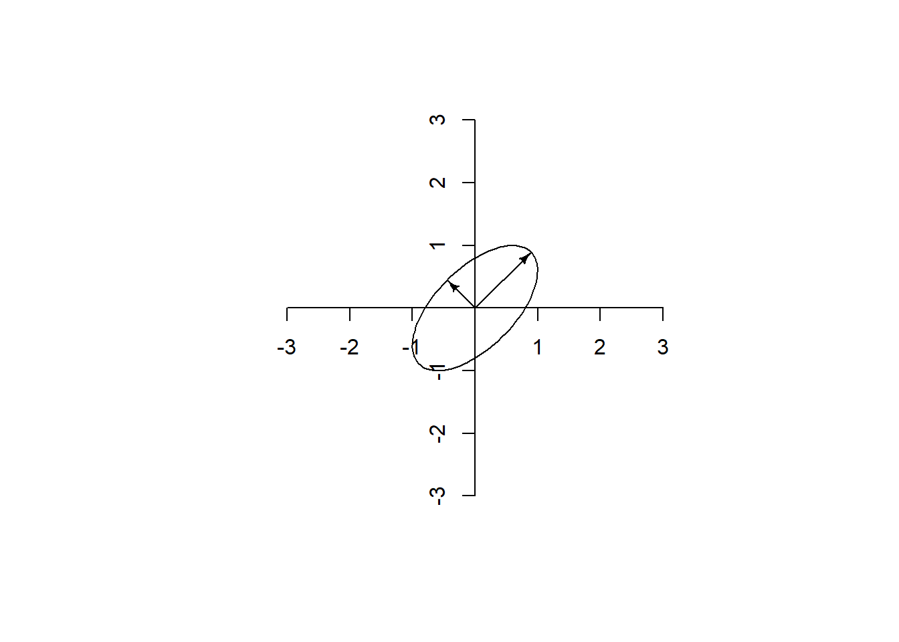

R1 <- 1:4
R2 <- 5:8
R3 <- 9:12
A <- rbind(R1,R2,R3)
A [,1] [,2] [,3] [,4]
R1 1 2 3 4
R2 5 6 7 8
R3 9 10 11 12A matrix is a series of numbers arranged in rows and columns. We usually abbreviate matrices with a bolded uppercase letter:
\[ \mathbf{A}_{j \times k} = \begin{bmatrix} a_{1,1} & a_{1,2} & \cdots & a_{1,k} \\ a_{2,1} & a_{2,2} & \cdots & a_{2,k} \\ \vdots & \vdots & \ddots & \vdots \\ a_{j,1} & a_{j,2} & \cdots & a_{j,k} \end{bmatrix} \]
For example,
\[ \mathbf{A} = \begin{bmatrix} 1&2&3&4\\ 5&6&7&8\\ 9&10&11&12 \end{bmatrix} \]
To make a matrix in R, there are many possibilities. I could create several row vectors and bind them together with the rbind function like so:
R1 <- 1:4
R2 <- 5:8
R3 <- 9:12
A <- rbind(R1,R2,R3)
A [,1] [,2] [,3] [,4]
R1 1 2 3 4
R2 5 6 7 8
R3 9 10 11 12Although it looks strange to do so, I could make several column vectors and bind them together with the cbind function.
C1 <- c(1,5,9)
C2 <- c(2,6,10)
C3 <- c(3,7,11)
C4 <- c(4,8,12)
A <- cbind(C1, C2, C3, C4)
A C1 C2 C3 C4
[1,] 1 2 3 4
[2,] 5 6 7 8
[3,] 9 10 11 12I could make a single vector and then use the matrix function to give it rows and columns. In most cases, I need only specify the row number or the column number, not both. By default, the matrix function assumes you are working with column vectors.
A <- matrix(c(1,5,9,
2,6,10,
3,7,11,
4,8,12),ncol = 4)
A [,1] [,2] [,3] [,4]
[1,] 1 2 3 4
[2,] 5 6 7 8
[3,] 9 10 11 12I find this confusing because vectors look like rows when working with code. Therefore I set the byrow parameter to TRUE and arrange the vector as if it had rows:
A <- matrix(c(1,2,3,4,
5,6,7,8,
9,10,11,12),
nrow = 3,
byrow = TRUE)
A [,1] [,2] [,3] [,4]
[1,] 1 2 3 4
[2,] 5 6 7 8
[3,] 9 10 11 12Make vector A into a 2 by 2 matrix like so:
\[ \mathbf{A}=\begin{bmatrix} 2&3\\ 5&7 \end{bmatrix} \]
A <- matrix(c(_,_,_,_),
nrow = _,
byrow = _)
# Any of these solutions is correct
# Using the rbind function
A <- rbind(c(2, 3), c(5, 7))
# Using the cbind function
A <- cbind(c(2, 5), c(3, 7))
# Using the matrix function
A <- matrix(c(2, 5, 3, 7), nrow = 2)
# Using the matrix function setting byrow = TRUE
A <- matrix(c(2, 3,
5, 7),
nrow = 2,
byrow = TRUE)\[ \color{RoyalBlue}{\mathbf{A}}=\begin{bmatrix} \color{RoyalBlue}{1} & \color{RoyalBlue}{2} & \color{RoyalBlue}{3} & \color{RoyalBlue}{4} \\ \color{RoyalBlue}{5} & \color{RoyalBlue}{6} & \color{RoyalBlue}{7} & \color{RoyalBlue}{8} \\ \color{RoyalBlue}{9} & \color{RoyalBlue}{10} & \color{RoyalBlue}{11} & \color{RoyalBlue}{12} \end{bmatrix}, \color{Firebrick}{\mathbf{B}}=\begin{bmatrix} \color{Firebrick}{13} & \color{Firebrick}{14} & \color{Firebrick}{15} & \color{Firebrick}{16} \\ \color{Firebrick}{17} & \color{Firebrick}{18} & \color{Firebrick}{19} & \color{Firebrick}{20} \end{bmatrix} \]
The equation below means, “Make a new matrix called C by appending B to the bottom of A.”
\[ \mathbf{C}=\begin{bmatrix} \color{RoyalBlue}{\mathbf{A}} \\ \color{FireBrick}{\mathbf{B}} \end{bmatrix}= \begin{bmatrix} \color{RoyalBlue}{1} & \color{RoyalBlue}{2} & \color{RoyalBlue}{3} & \color{RoyalBlue}{4} \\ \color{RoyalBlue}{5} & \color{RoyalBlue}{6} & \color{RoyalBlue}{7} & \color{RoyalBlue}{8} \\ \color{RoyalBlue}{9} & \color{RoyalBlue}{10} & \color{RoyalBlue}{11} & \color{RoyalBlue}{12}\\ \color{Firebrick}{13} & \color{Firebrick}{14} & \color{Firebrick}{15} & \color{Firebrick}{16} \\ \color{Firebrick}{17} & \color{Firebrick}{18} & \color{Firebrick}{19} & \color{Firebrick}{20} \end{bmatrix} \]
In R, adding new rows to a matrix is done with the rbind function (Think “row bind”). Matrices must have the same number of columns to be compatible.
A <- matrix(1:12, nrow = 3, byrow = TRUE)
B <- matrix(13:20, nrow = 2, byrow = TRUE)
C <- rbind(A,B)
C [,1] [,2] [,3] [,4]
[1,] 1 2 3 4
[2,] 5 6 7 8
[3,] 9 10 11 12
[4,] 13 14 15 16
[5,] 17 18 19 20The cbind function (Think “column bind”) works the same way but it appends columns to the right of a matrix. Matrices must have the same number of rows to be compatible.
A <- matrix(1:4, nrow = 2)
B <- matrix(5:8, nrow = 2)
C <- cbind(A,B)
C [,1] [,2] [,3] [,4]
[1,] 1 3 5 7
[2,] 2 4 6 8Make a 2 by 2 matrix A:
\[ A=\begin{bmatrix} 11&13\\ 17&19 \end{bmatrix} \]
Make a 2 by 2 matrix B:
\[ B=\begin{bmatrix} 11&13\\ 17&19 \end{bmatrix} \]
Now append A and B with rbind to make a 4 by 2 matrix like so:
\[ \begin{bmatrix} 2&3\\ 5&7\\ 11&13\\ 17&19 \end{bmatrix} \]
A <- matrix(c(2, 5, 3, 7), nrow = 2)
B <- matrix(c(11,17,13,19), nrow = 2)
rbind(A, B) [,1] [,2]
[1,] 2 3
[2,] 5 7
[3,] 11 13
[4,] 17 19Now use cbind to make a 2 by 4 matrix:
\[ \begin{bmatrix} 2&3&11&13\\ 5&7&17&19 \end{bmatrix} \]
cbind(A, B) [,1] [,2] [,3] [,4]
[1,] 2 3 11 13
[2,] 5 7 17 19Let’s make this matrix:
\[ \mathbf{A} = \begin{bmatrix} 1&2&3&4\\ 5&6&7&8\\ 9&10&11&12 \end{bmatrix} \]
A <- matrix(1:12, nrow = 3, byrow = TRUE)
A [,1] [,2] [,3] [,4]
[1,] 1 2 3 4
[2,] 5 6 7 8
[3,] 9 10 11 12To select a single element of a matrix, specify the row and column in brackets after the matrix. For example, the element \(\mathbf{A}_{3,2}\) (i.e., the 3rd row and 2nd column of \(\mathbf{A}\)) is
A[3,2][1] 10Select the element in row 2, column 3
#| label: ex-select
A <- matrix(1:12, nrow = 3, byrow = TRUE)
A[_,_]A[2,3][1] 7Leaving one of the slots in the bracket empty means that you want all of the elements in that row or column.
\(\mathbf{A}_{1\bullet}\) is the 1st row of \(\mathbf{A}\).
A[1, ][1] 1 2 3 4\(\mathbf{A}_{\bullet 3}\) is the 3rd column of \(\mathbf{A}\).
A[, 3][1] 3 7 11By default, whenever a single row, column, or element is returned from a matrix, R drops the row and column dimensions. If you wish to preserve the result in matrix form, set drop to FALSE:
A[, 3, drop = FALSE] [,1]
[1,] 3
[2,] 7
[3,] 11Select column 1 of A.
A[, 1][1] 1 5 9A vector of integers will select whichever rows or columns you wish. Here are the 2nd and 3rd rows:
A[2:3, ] [,1] [,2] [,3] [,4]
[1,] 5 6 7 8
[2,] 9 10 11 12Here are the 1st and 4th columns:
A[, c(1, 4)] [,1] [,2]
[1,] 1 4
[2,] 5 8
[3,] 9 12Select columns 1 and 3 of A.
A[, c(1, 3)] [,1] [,2]
[1,] 1 3
[2,] 5 7
[3,] 9 11Here is the first two rows of \(\mathbf{A}\):
A[c(TRUE,TRUE,FALSE),] [,1] [,2] [,3] [,4]
[1,] 1 2 3 4
[2,] 5 6 7 8This seems like a strange way to do this but it is actually quite powerful. Any vector of TRUE and FALSE values can be used to select things. For example, select a column only if its first value is greater than 2:
s <- A[1,] > 2 # Creates a vector that tests whether the first row elements are greater than 2
A[,s] # Select only the columns whose first value is greater than 2 [,1] [,2]
[1,] 3 4
[2,] 7 8
[3,] 11 12We can give row and column names to a matrix like so:
rownames(A) <- c("Gold","Sliver","Bronze")
colnames(A) <- c("Vault","Uneven Bars","Balance Beam","Floor")
A Vault Uneven Bars Balance Beam Floor
Gold 1 2 3 4
Sliver 5 6 7 8
Bronze 9 10 11 12Now we can select rows and columns by names:
A[c("Gold","Bronze"),] Vault Uneven Bars Balance Beam Floor
Gold 1 2 3 4
Bronze 9 10 11 12Suppose we have matrices \(\mathbf{A}\), \(\mathbf{B}\), and \(\mathbf{C}\).
A <- matrix(c(
15,9,6,19,
20,11,20,18,
15,3,8,5),
nrow = 3, byrow = TRUE)\[\mathbf{A} = \begin{bmatrix} 15 & 9 & 6 & 19\\ 20 & 11 & 20 & 18\\ 15 & 3 & 8 & 5 \end{bmatrix} \]
B <- matrix(c(
17,14,1,19,
11,2,12,14,
5,16,1,20),
nrow = 3, byrow = TRUE)\[\mathbf{B} = \begin{bmatrix} 17 & 14 & 1 & 19\\ 11 & 2 & 12 & 14\\ 5 & 16 & 1 & 20 \end{bmatrix} \]
C <- matrix(c(
5,16,20,
9,9,12,
15,5,8,
12,8,17), nrow = 4, byrow = TRUE)\[\mathbf{C} = \begin{bmatrix} 5 & 16 & 20\\ 9 & 9 & 12\\ 15 & 5 & 8\\ 12 & 8 & 17 \end{bmatrix} \]
\(\begin{bmatrix}\mathbf{A}\\\mathbf{B}\end{bmatrix}=\)
A <- matrix(c(
15,9,6,19,
20,11,20,18,
15,3,8,5),
nrow = 3, byrow = TRUE)
B <- matrix(c(
17,14,1,19,
11,2,12,14,
5,16,1,20),
nrow = 3, byrow = TRUE)
rbind(A, B) [,1] [,2] [,3] [,4]
[1,] 15 9 6 19
[2,] 20 11 20 18
[3,] 15 3 8 5
[4,] 17 14 1 19
[5,] 11 2 12 14
[6,] 5 16 1 20\(\mathbf{A}_{\bullet 3}=\)
A[, 3][1] 6 20 8\(\mathbf{B}_{3, 2}=\)
B[3, 2][1] 16Rows 2 and 4 of \(\mathbf{C}=\)
C <- matrix(c(
5,16,20,
9,9,12,
15,5,8,
12,8,17), nrow = 4, byrow = TRUE)
C[c(2, 4), ] [,1] [,2] [,3]
[1,] 9 9 12
[2,] 12 8 17Columns of \(\mathbf{C}\) if the first value is greater than 10.
s <- C[1, ] > 10
C[, s] [,1] [,2]
[1,] 16 20
[2,] 9 12
[3,] 5 8
[4,] 8 17Any portion of a matrix can be replaced with new values. For example, this will replace the first row with zeros:
A[1, ] <- c(0, 0, 0, 0)
A [,1] [,2] [,3] [,4]
[1,] 0 0 0 0
[2,] 20 11 20 18
[3,] 15 3 8 5To transpose a matrix is to flip its rows into columns.
\(\mathbf{A}'\) is matrix \(\mathbf{A}\) transposed.
If
\[\mathbf{A}=\begin{bmatrix} 1&2&3\\ 4&5&6 \end{bmatrix}\]
Then
\[\mathbf{A}'=\begin{bmatrix} 1&4\\ 2&5\\ 3&6 \end{bmatrix}\]
In R the t function transposes matrices.
A <- matrix(1:6, nrow = 2, byrow = TRUE)
A [,1] [,2] [,3]
[1,] 1 2 3
[2,] 4 5 6tA <- t(A)
tA [,1] [,2]
[1,] 1 4
[2,] 2 5
[3,] 3 6A of even numbers up to 20.A, calling it Aprime.Aprime with zeroes.A <- matrix(seq(2, 20, 2), nrow = 2)
Aprime <- t(A)
Aprime[5, ] <- c(0, 0)
Aprime [,1] [,2]
[1,] 2 4
[2,] 6 8
[3,] 10 12
[4,] 14 16
[5,] 0 0In a square matrix, the number of rows is equal to the number of columns.
A symmetric matrix is a square matrix that is equal to its transpose.
\[\mathbf{A}=\mathbf{A}'\]
This means that for all elements, \(a_{ij}=a_{ji}\).
Here is an example of a symmetric matrix:
\[\begin{bmatrix} \color{green}a & \color{Firebrick}b & \color{RoyalBlue}c\\ \color{Firebrick}b & \color{gold}d & \color{DarkOrchid}e\\ \color{RoyalBlue}c & \color{DarkOrchid}e & \color{orange}f \end{bmatrix}\]
To verify that a matrix is symmetric in R:
all(A == t(A))Correlation matrices and covariance matrices are always symmetric.
A diagonal matrix is a square matrix consisting of zeroes everywhere except the diagonal. For example,
\[ \mathbf{A} = \begin{bmatrix} a & 0 & 0\\ 0 & b & 0\\ 0 & 0 & c \end{bmatrix} \]
To create a diagonal matrix, specify the diagonal vector and then insert it into the diag function like so:
a <- 1:4
A <- diag(a)
A [,1] [,2] [,3] [,4]
[1,] 1 0 0 0
[2,] 0 2 0 0
[3,] 0 0 3 0
[4,] 0 0 0 4As we will see later, the diag function actually has several different purposes:
A <- diag(a)a <- diag(A)I <- diag(n)diag(A) <- bIn order to add matrices, they must be compatible, meaning that they must have same number of rows and columns.
To add compatible matrices, simply add elements in the same position. \[ \begin{aligned}\mathbf{A}+\mathbf{B}&= \begin{bmatrix} a_{11} & a_{12}\\ a_{21} & a_{22}\\ a_{31} & a_{32} \end{bmatrix}+ \begin{bmatrix} b_{11} & b_{12}\\ b_{21} & b_{22}\\ b_{31} & b_{32} \end{bmatrix}\\ &= \begin{bmatrix} a_{11}+b_{11} & a_{12}+b_{12}\\ a_{21}+b_{21} & a_{22}+b_{22}\\ a_{31}+b_{31} & a_{32}+b_{32} \end{bmatrix} \end{aligned} \]
Subtracting matrices works the same way.
\[ \begin{aligned}\mathbf{A}-\mathbf{B}&= \begin{bmatrix} a_{11} & a_{12}\\ a_{21} & a_{22}\\ a_{31} & a_{32} \end{bmatrix}- \begin{bmatrix} b_{11} & b_{12}\\ b_{21} & b_{22}\\ b_{31} & b_{32} \end{bmatrix}\\ &= \begin{bmatrix} a_{11}-b_{11} & a_{12}-b_{12}\\ a_{21}-b_{21} & a_{22}-b_{22}\\ a_{31}-b_{31} & a_{32}-b_{32} \end{bmatrix} \end{aligned} \]
A <- matrix(1:6,nrow = 2)
A [,1] [,2] [,3]
[1,] 1 3 5
[2,] 2 4 6B <- matrix(seq(10,60,10),nrow = 2)
B [,1] [,2] [,3]
[1,] 10 30 50
[2,] 20 40 60APlusB <- A + B
APlusB [,1] [,2] [,3]
[1,] 11 33 55
[2,] 22 44 66AMinusB <- A - B
AMinusB [,1] [,2] [,3]
[1,] -9 -27 -45
[2,] -18 -36 -54A scalar is a single number, not in a matrix. You can multiply a scalar by a matrix like so:
\[k\mathbf{A}= k\begin{bmatrix} a_{11} & a_{12} & a_{13}\\ a_{21} & a_{22} & a_{23} \end{bmatrix}= \begin{bmatrix} ka_{11} & ka_{12} & ka_{13}\\ ka_{21} & ka_{22} & ka_{23} \end{bmatrix}\]
k <- 10
A <- matrix(1:6,nrow = 2)
A [,1] [,2] [,3]
[1,] 1 3 5
[2,] 2 4 6kA <- k * A
kA [,1] [,2] [,3]
[1,] 10 30 50
[2,] 20 40 60Matrix multiplication is considerably more complex than matrix addition and subtraction. It took me an embarrassingly long time for me to wrap my head around it. I will state things in the abstract first, but it is hard to see what is going on until you see a concrete example.
In order for matrices to be compatible for multiplication, the number of columns of the left matrix must be the same as the number of rows of the right matrix. The product of A and B will have the the same number of rows as A and the same number of columns as B.
Imagine that matrix A has n rows and m columns. Matrix B has m rows and p columns. When A and B are multiplied, the resulting product is matrix C with n rows and p columns.
\[ \mathbf{A}_{n\times m} \mathbf{B}_{m\times p} = \mathbf{C}_{n\times p} \]
Element \(c_{ij}\) of \(\mathbf{C}\) is the dot-product of row \(i\) of \(\mathbf{A}\) (i.e., \(\mathbf{A}_{i\bullet}\)) and column \(j\) of \(\mathbf{B}\) (i.e., \(\mathbf{B}_{\bullet j}\)). That is,
\[c_{ij}=\mathbf{A}_{i\bullet}\mathbf{B}_{\bullet j}\]
This schematic gives a nice visual summary:

\[\mathbf{A}=\begin{bmatrix} \color{FireBrick}a&\color{FireBrick}b&\color{FireBrick}c\\ \color{RoyalBlue}e&\color{RoyalBlue}d&\color{RoyalBlue}f \end{bmatrix}\]
\[\mathbf{B}=\begin{bmatrix} \color{green}g&\color{DarkOrchid}h\\ \color{green}i&\color{DarkOrchid}j\\ \color{green}k&\color{DarkOrchid}l \end{bmatrix}\]
\[\mathbf{AB}=\begin{bmatrix} \color{FireBrick}a\color{Green}g+\color{FireBrick}b\color{green}i+\color{FireBrick}c\color{green}k&\color{FireBrick}a\color{DarkOrchid}h+\color{FireBrick}b\color{DarkOrchid}j+\color{FireBrick}c\color{DarkOrchid}l\\ \color{RoyalBlue}e\color{green}g+\color{RoyalBlue}d\color{green}i+\color{RoyalBlue}f\color{green}k&\color{RoyalBlue}e\color{DarkOrchid}h+\color{RoyalBlue}d\color{DarkOrchid}j+\color{RoyalBlue}f\color{DarkOrchid}l \end{bmatrix}\]
Using specific numbers:
\[\mathbf{A}=\begin{bmatrix} \color{FireBrick}1&\color{FireBrick}2&\color{FireBrick}3\\ \color{RoyalBlue}4&\color{RoyalBlue}5&\color{RoyalBlue}6 \end{bmatrix}\]
\[\mathbf{B}=\begin{bmatrix} \color{green}{10}&\color{DarkOrchid}{40}\\ \color{green}{20}&\color{DarkOrchid}{50}\\ \color{green}{30}&\color{DarkOrchid}{60} \end{bmatrix}\]
\[ \begin{align} \mathbf{AB}&= \begin{bmatrix} \color{FireBrick}1\cdot\color{green}{10}+\color{FireBrick}2\cdot\color{green}{20}+\color{FireBrick}3\cdot\color{green}{30}&\color{FireBrick}1\cdot\color{DarkOrchid}{40}+\color{FireBrick}2\cdot\color{DarkOrchid}{50}+\color{FireBrick}3\cdot\color{DarkOrchid}{60}\\ \color{RoyalBlue}4\cdot\color{green}{10}+\color{RoyalBlue}5\cdot\color{green}{20}+\color{RoyalBlue}6\cdot\color{green}{30}&\color{RoyalBlue}4\cdot\color{DarkOrchid}{40}+\color{RoyalBlue}5\cdot\color{DarkOrchid}{50}+\color{RoyalBlue}6\cdot\color{DarkOrchid}{60} \end{bmatrix}\\[1ex] &=\begin{bmatrix} 140&320\\ 320&770 \end{bmatrix} \end{align} \]
The %*% operator multiplies matrices (and the inner products of vectors).
A <- matrix(1:6,nrow = 2,byrow = TRUE)
A [,1] [,2] [,3]
[1,] 1 2 3
[2,] 4 5 6B <- matrix(seq(10,60,10),nrow = 3)
B [,1] [,2]
[1,] 10 40
[2,] 20 50
[3,] 30 60C <- A %*% B
C [,1] [,2]
[1,] 140 320
[2,] 320 770Elementwise matrix multiplication is when we simply multiply corresponding elements of identically-sized matrices. This is sometimes called the Hadamard product.
\[\begin{aligned}A\circ B&=\begin{bmatrix} a_{11} & a_{12} & a_{13}\\ a_{21} & a_{22} & a_{23} \end{bmatrix} \circ \begin{bmatrix} b_{11} & b_{12} & b_{13}\\ b_{21} & b_{22} & b_{23} \end{bmatrix}\\ &= \begin{bmatrix} a_{11}\, b_{11} & a_{12}\, b_{12} & a_{13}\, b_{13}\\ a_{21}\, b_{21} & a_{22}\, b_{22} & a_{23}\, b_{23} \end{bmatrix}\end{aligned}\]
In R, elementwise multiplication is quite easy.
C <- A * BElementwise division works the same way.
C <- A / B\[\mathbf{A} = \begin{0} 15 & 9 & 6 & 19\\ 20 & 11 & 20 & 18\\ 15 & 3 & 8 & 5 \end{0} \]\[\mathbf{B} = \begin{0} 17 & 14 & 1 & 19\\ 11 & 2 & 12 & 14\\ 5 & 16 & 1 & 20 \end{0} \]\[\mathbf{C} = \begin{0} 5 & 16 & 20\\ 9 & 9 & 12\\ 15 & 5 & 8\\ 12 & 8 & 17 \end{0} \]
The identity element for a binary operation is the value that when combined with something leaves it unchanged. For example, the additive identity is 0.
\[X+0=X\]
The number 0 is also the identity element for subtraction.
\[X-0=X\]
The multiplicative identity is 1.
\[X \times 1 = X\]
The number 1 is also the identity element for division and exponentiation.
\[X \div 1=X\]
\[X^1=X\]
For matrix multiplication with square matrices, the identity element is called the identity matrix, \(\mathbf{I}\).
\[\mathbf{AI}=\mathbf{A}\]
The identity matrix is a diagonal matrix with ones on the diagonal. For example, a \(2 \times 2\) identity matrix looks like this:
\[\mathbf{I}_2=\begin{bmatrix} 1 & 0\\ 0 & 1 \end{bmatrix}\]
A size-3 identity matrix looks like this:
\[\mathbf{I}_3=\begin{bmatrix} 1 & 0 & 0\\ 0 & 1 & 0\\ 0 & 0 & 1 \end{bmatrix}\]
It is usually not necessary to use a subscript because the size of the identity matrix is usually assumed to be the same as that of the matrix it is multiplied by.
Thus, although it is true that \(\mathbf{AI}=\mathbf{A}\) and \(\mathbf{IA}=\mathbf{A}\), it is possible that the \(\mathbf{I}\) is of different sizes in these equations, depending on the dimensions of \(\mathbf{A}\).
If \(\mathbf{A}\) has \(m\) rows and \(n\) columns, in \(\mathbf{AI}\), it is assumed that \(\mathbf{I}\) is of size \(n\) so that it is right-compatible with \(\mathbf{A}\). In \(\mathbf{IA}\), it is assumed that \(\mathbf{I}\) is of size \(m\) so that it is left-compatible with \(\mathbf{A}\).
To create an identity matrix, use the diag function with a single integer as its argument. For example diag(6) produces a 6 by 6 identity matrix.
I6 <- diag(6) [,1] [,2] [,3] [,4] [,5] [,6]
[1,] 1 0 0 0 0 0
[2,] 0 1 0 0 0 0
[3,] 0 0 1 0 0 0
[4,] 0 0 0 1 0 0
[5,] 0 0 0 0 1 0
[6,] 0 0 0 0 0 1\(X\) multiplied by its multiplicative inverse yields the multiplicative identity, 1. The multiplicative inverse is also known as the reciprocal.
\[X\times \frac{1}{X}=1\]
Another way to write the reciprocal is to give it an exponent of \(-1\).
\[X^{-1}=\frac{1}{X}\]
Multiplying square matrix \(\mathbf{A}\) by its inverse \((\mathbf{A}^{-1})\) produces the identity matrix.
\[\mathbf{A}\mathbf{A}^{-1}=\mathbf{I}\]
The inverse matrix produces the identity matrix whether it is pre-multiplied or post-multiplied.
\[\mathbf{A}\mathbf{A}^{-1}=\mathbf{A}^{-1}\mathbf{A}=\mathbf{I}\]
The calculation of an inverse is quite complex and is best left to computers.
Only square matrices have inverses.
Actually not all square matrices have inverses. In the same way that 0 has no resciprocal (\(\frac{1}{0}\) is undefined), some matrices cannot be inverted. For example, this matrix of ones has no inverse.
\[\begin{bmatrix} 1 & 1\\ 1 & 1 \end{bmatrix}\]
There is no matrix we can multiply it by to produce the identity matrix. In the algorithm for calculating the inverse, division by 0 sometimes occurs and the whole process comes to a halt. A matrix that cannot be inverted is called a singular matrix.
The covariance matrix of collinear variables is singular. Collinear means that at least one of the variables can be perfectly predicted from the other variables.
For example, if \(Z=X+Y\), we cannot use \(X\), \(Y\), and \(Z\) together as predictors in a multiple regression equation. \(Z\) is perfectly predicted from \(X\) and \(Y\). In the calculation of the regression coefficients, division by 0 will be attempted and calculation can proceed no further.
While regression with perfectly collinear predictors is impossible, regression with almost perfectly collinear predictors can produce strange and unstable results. For example, if we round \(Z\), the rounding error makes \(Z\) nearly collinear with \(X\) and \(Y\) but not quite perfectly collinear with them. In this case, the regression will run but might give misleading results that might differ dramatically depending on how finely rounded \(Z\) is.
You would think that the inverse function would be called “inverse” or “inv” or something like that. Unintuitively, the inverse function in R is solve. The reason for this is that solve covers a wider array of problems than just the inverse. To see how, imagine that we have two matrices of known constants \(\mathbf{A}_{m\times m}\) and \(\mathbf{B}_{m\times n}\). We also have a matrix of unknowns \(\mathbf{X}_{m\times n}\). How do we solve this equation?
\[\mathbf{AX}=\mathbf{B}\]
We can pre-multiply both sides of the equation by the inverse of \(\mathbf{A}\).
\[\begin{aligned}\mathbf{AX}&=\mathbf{B}\\ \mathbf{A}^{-1}\mathbf{AX}&=\mathbf{A}^{-1}\mathbf{B}\\ \mathbf{IX}&=\mathbf{A}^{-1}\mathbf{B}\\ \mathbf{X}&=\mathbf{A}^{-1}\mathbf{B}\end{aligned}\]
You may have encountered this kind of problem in an algebra class when you used matrices to solve systems of linear equations. For example, these equations:
\[\begin{aligned} 2x -9y -2z &= 5\\ -2x + 5y + 3z &= 3\\ 2x + 4y - 3z &= 12 \end{aligned}\]
can be rewritten as matrices
\[\begin{aligned}\mathbf{AX}&=\mathbf{B}\\ \begin{bmatrix} \phantom{-}2 & -9 & -2\\ -2 & \phantom{-}5 & \phantom{-}3\\ \phantom{-}2 & \phantom{-}4 & -3 \end{bmatrix} \begin{bmatrix} x \\ y \\ z \end{bmatrix}&= \begin{bmatrix} 5 \\ 3 \\ 12 \end{bmatrix} \end{aligned}\]
In R, problems of this sort are solved like so:
X -> solve(A,B)
A <- matrix(c(2, -9, -2,
-2, 5, 3,
2, 4, -3),
nrow = 3,byrow = TRUE)
B <- matrix(c(5,3,-12),ncol = 1)
X <- solve(A,B) [,1]
[1,] 2
[2,] -1
[3,] 4If \(\mathbf{B}\) is unspecified in the solve function, it is assumed that it is the identity matrix and therefore will return the inverse of \(\mathbf{A}\). That is, if \(\mathbf{B=I}\), then
\[\begin{aligned} \mathbf{AX}&=\mathbf{B}\\ \mathbf{AX}&=\mathbf{I}\\ \mathbf{A^{-1}AX}&=\mathbf{A^{-1}I}\\ \mathbf{IX}&=\mathbf{A^{-1}I}\\ \mathbf{X}&=\mathbf{A^{-1}}\\ \end{aligned}\]
Thus, solve(A) is \(\mathbf{A}^{-1}\)
A <- matrix(c(1,0.5,0.5,1),nrow = 2) [,1] [,2]
[1,] 1.0 0.5
[2,] 0.5 1.0iA <- solve(A) [,1] [,2]
[1,] 1.3333333 -0.6666667
[2,] -0.6666667 1.3333333A %*% iA [,1] [,2]
[1,] 1 0
[2,] 0 1\[\mathbf{B} = \begin{0} 17 & 14 & 1 & 19\\ 11 & 2 & 12 & 14\\ 5 & 16 & 1 & 20 \end{0} \]\[\mathbf{C} = \begin{0} 5 & 16 & 20\\ 9 & 9 & 12\\ 15 & 5 & 8\\ 12 & 8 & 17 \end{0} \]
A non-bolded \(1\) is just the number one.
A bolded \(\mathbf{1}\) is a column vector of ones. For example,
\[\mathbf{1}_1=\begin{bmatrix} 1 \end{bmatrix}, \mathbf{1}_2=\begin{bmatrix} 1\\ 1 \end{bmatrix}, \mathbf{1}_3=\begin{bmatrix} 1\\ 1\\ 1 \end{bmatrix},..., \mathbf{1}_n=\begin{bmatrix} 1\\ 1\\ 1\\ \vdots \\ 1 \end{bmatrix}\]
Like the identity matrix, the length of \(\mathbf{1}\) is ususally inferred from context.
The one vector is used to create sums. Post multiplying a matrix by \(\mathbf{1}\) creates a column vector of row sums.
Suppose that
\[\mathbf{X}= \begin{bmatrix} 1 & 2\\ 3 & 4 \end{bmatrix}\]
\[\mathbf{X1}=\begin{bmatrix} 1 & 2\\ 3 & 4 \end{bmatrix} \begin{bmatrix} 1\\ 1 \end{bmatrix} =\begin{bmatrix} 3\\ 7 \end{bmatrix} \]
Pre-multiplying by a transposed one matrix creates a row vector of column totals. \[\mathbf{1'X}= \begin{bmatrix} 1& 1 \end{bmatrix} \begin{bmatrix} 1 & 2\\ 3 & 4 \end{bmatrix} =\begin{bmatrix} 4&6 \end{bmatrix} \]
Making a “one sandwich” creates the sum of the entire matrix.
\[\mathbf{1'X1}= \begin{bmatrix} 1& 1 \end{bmatrix} \begin{bmatrix} 1 & 2\\ 3 & 4 \end{bmatrix} \begin{bmatrix} 1\\ 1 \end{bmatrix} =\begin{bmatrix} 10 \end{bmatrix} \]
To create a \(\mathbf{1}\) vector that is compatible with the matrix it post-multiplies, use the ncol function inside the rep function:
A <- matrix(1:20,nrow = 4)
# 1 column matrix is the default
Ones <- matrix(rep(1,ncol(A)))
Ones <- 1 %>% rep(ncol(A)) %>% matrix
RowSumsA <- A %*% Ones
RowSumsA [,1]
[1,] 45
[2,] 50
[3,] 55
[4,] 60Use the nrow function to make a \(\mathbf{1}\) vector that is compatible with the matrix it pre-multiplies:
Ones <- matrix(rep(1,nrow(A)),ncol = 1)
ColSumsA <- t(Ones) %*% A [,1] [,2] [,3] [,4] [,5]
[1,] 10 26 42 58 74Of course, creating \(\mathbf{1}\) vectors like this can be tedious. Therefore rowSums(A) will add the rows of \(\mathbf{A}\), colSums(A) with give the column totals of \(\mathbf{A}\), and sum(A) will give the overal total of \(\mathbf{A}\).
\[\mathbf{Ax=b}\]
Square matrix \(\mathbf{A}\) scales and rotates vector \(\mathbf{x}\) into vector \(\mathbf{b}\).
Is there a non-zero vector \(\mathbf{v}\) that \(\mathbf{A}\) scales but does not rotate? If so, \(\mathbf{v}\) is an eigenvector. The value \(\lambda\) by which \(\mathbf{v}\) is scaled is the eigenvalue.
\[\mathbf{Av}=\lambda\mathbf{v}\]
Every eigenvector that exists for matrix \(\mathbf{A}\), is accompanied by an infinite number of parallel vectors of varying lengths that are also eigenvectors. Thus, we focus on the unit eigenvectors and their accompanying eigenvalues.
Eigenvectors and eigenvalues are extremely important concepts in a wide variety of applications in many disciplines. For us, they play a pivotal role in principal components analyses (and factor analysis), and multivariate analyses such as MANOVA.
Eigenvectors (via principal components) help us rescale multivariate data into a smaller number of variables.
The eigenvectors of correlation matrix A below, represent the orientation vectors of the ellipsoid that contains the multivariate normal data. The eigenvalues of A
\[\mathbf{A}=\begin{0} 1 & 0.9 & 0.5\\ 0.9 & 1 & 0.4\\ 0.5 & 0.4 & 1 \end{0}\]
eig <- eigen(A)
evectors <- eig$vectors\[\boldsymbol{v}= \begin{bmatrix} -0.638492698875417 & -0.248213013160407 & 0.728503516519047\\ -0.616886554316163 & -0.400939031143915 & -0.677273115079367\\ -0.460193494724467 & 0.881837963235429 & -0.102877373654618 \end{bmatrix}\]
evalues <- eig$values\(\boldsymbol{\lambda} = \{2.23,0.68,0.09\}\)
plot3d(mvtnorm::rmvnorm(5000,sigma = A), col = "royalblue", axes = F, box = F, aspect = T, xlab = "", ylab = "", zlab = "", alpha = 0.6, size = 0.2)
plot3d(ellipse3d(A,subdivide = 3, t = 1), alpha = 0.2,add = T)
for (i in 1:3) heplots::arrow3d(-1 * (eig$values[i] ^ (.5)) * eig$vectors[,i],(eig$values[i] ^ (.5)) * eig$vectors[,i],n = 16, lwd = 2, barblen = 0 , col = "royalblue")
plot3d(ellipse3d(A,subdivide = 5, t = 2), alpha = 0.1,add = T)
xticks <- c(-3:-1, 1:3)
axis3d('x', pos = c(NA, 0, 0), at = xticks)
axis3d('y', pos = c(0, NA, 0), at = xticks)
axis3d('z', pos = c(0, 0, NA), at = xticks)
aspect3d(1,1,1)For symmetric matrices (e.g., correlation and covariance matrices), eigenvectors are orthogonal.
Extract the eigenvalues and eigen vectors from correlation matrix rho.
rho <- matrix(c(1,0.6,0.6,1),2)xticks <- c(-3:-1, 1:3)
plot(ellipse::ellipse(rho, t = 1), asp = 1, ann = F, axes = F, type = "l", ylim = c(-3,3), xlim = c(-3,3))
axis(1, pos = 0, at = xticks)
axis(2, pos = 0, at = xticks)
evec <- eigen(rho)$vectors
eval <- eigen(rho)$values ^ 0.5
shape::Arrows(0,0,evec[1,1]*eval[1],evec[2,1]*eval[1],arr.adj = 1, arr.length = 0.2)
shape::Arrows(0,0,evec[1,2]*eval[2],evec[2,2]*eval[2],arr.adj = 1, arr.length = 0.2)
{kind=link}